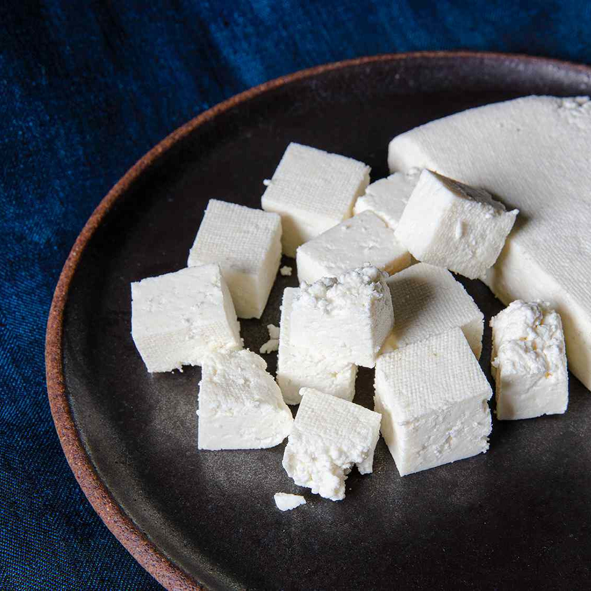

Description
This easy paneer recipe is great for vegetarians. You can add paneer to
your favorite curry or dish. Homemade paneer is softer and lighter than
the tofu-like consistency of paneer found in many Indian restaurants.
Ingredients
- 1 gallon milk
- 1 quart buttermilk
- 1 cup canola oil for frying
Steps:
-
Pour milk into a large pot and bring to a boil over medium heat; watch
carefully to prevent milk from boiling over. When milk begins to boil,
pour buttermilk into the pot in a steady stream, stirring constantly.
The milk will separate into curds and water.
-
Line a colander with cheesecloth. Pour milk mixture through the
cheesecloth, reserving some of the strained liquid. Let milk mixture sit
in the colander until curds are settled and dripping stops, about 2
hours.
-
Transfer strained curds to a food processor. Process until smooth and
mixture can be formed into a ball. Add some of the reserved liquid and
process again if mixture is too dry. The consistency should resemble
firm ricotta cheese.
-
Turn cheese out onto a clean surface and knead until smooth. Form into a
ball and wrap in plastic. Refrigerate until needed.
-
To cook paneer, heat oil in a large, heavy skillet over medium-high
heat. Cut paneer into bite-sized pieces. Fry in hot oil until very pale
golden brown, about 1 minute. Drain on a paper towel-lined plate.